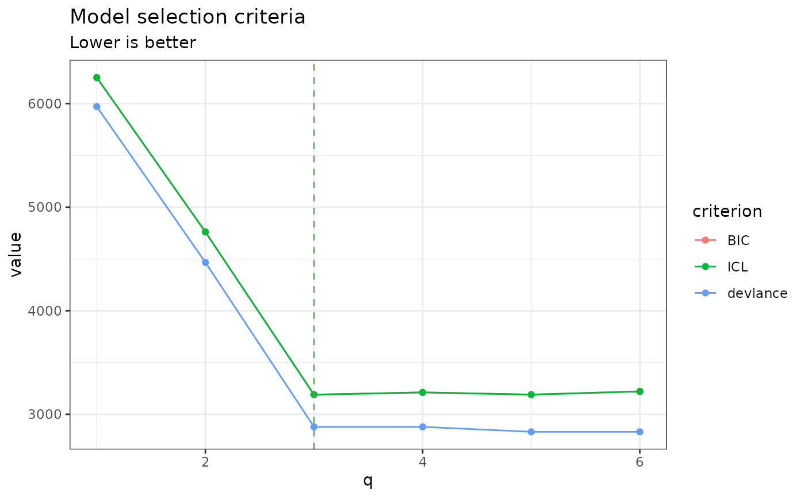
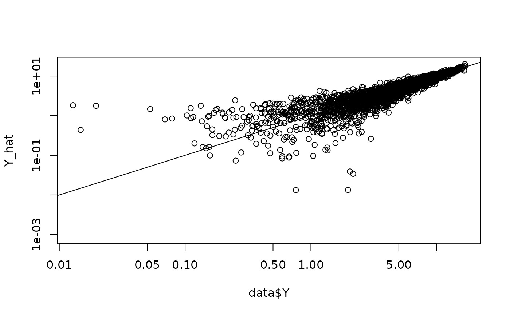

Fits a Normal-Block model, or a collection of them, by (variational) EM. The arguments select the model: the family (`model`), whether the clustering is known (`blocks`), whether the network is penalized (`sparsity`) and whether Y is zero-inflated (`zero_inflation`).
Usage
normal_block(
data,
blocks,
sparsity = 0,
zero_inflation = FALSE,
control = NB_control(),
model = c("var", "mean")
)Arguments
- data
a [NormalBlockData] object, holding the responses (Y, n x p) and the covariates (X, n x d).
- blocks
the clustering of the variables: a p x q indicator matrix for a known clustering (e.g. `model.matrix(~ 0 + factor(labels))`), a single integer q for an unknown clustering into q clusters, or a vector of distinct integers for a collection over these values of q.
- sparsity
the graphical-lasso penalty on Omega: `0` (the default) for none, a positive number for a single penalty, or `TRUE` for a collection along a path of penalties (see [NB_control()]).
- zero_inflation
whether to model an excess of exact zeros in Y.
- control
a list of settings, built with [NB_control()].
- model
the model family: `"var"` (the default) clusters the variables by how they covary, and infers a network between clusters (see [NormalBlockVarBase]); `"mean"` clusters them by how they respond to the covariates, `mu_i = C B' X_i` (see [NormalBlockMeanBase]). Every combination of the other arguments is available for both families, except a penalty together with zero-inflation for the mean-block family, whose zero-inflated models have a diagonal or spherical Sigma.
Value
a fitted model (an R6 object, see the classes listed in the reference index), or a collection of fitted models.
Examples
## Variance-block models over a range of q
ex_data <- generate_normal_block_var_data(n = 100, p = 30, d = 1, q = 3)
data <- NormalBlockData$new(ex_data$Y, ex_data$X)
my_normal_block <- normal_block(data, blocks = 1:5)
#> Fitting a collection of diagonal normal-block-var models over q
#> refine(): improved 1 of 5 models
#>
#> DONE
my_normal_block$plot(c("deviance", "BIC", "ICL"))

best <- my_normal_block$get_best_model("ICL")
plot(ex_data$Y, fitted(best)); abline(0, 1)

## the same with zero-inflation
ex_data_zi <- generate_normal_block_var_data(n = 50, p = 30, d = 1, q = 3,
kappa = rep(0.5, 30))
zidata <- NormalBlockData$new(ex_data_zi$Y, ex_data_zi$X)
my_zi_block <- normal_block(zidata, blocks = 3, zero_inflation = TRUE)
#> Fitting a zero-inflated diagonal normal-block-var model with 3 unknown clusters
#>
#> DONE
## a mean-block model (clustering in the mean rather than the covariance)
ex_mean <- generate_normal_block_mean_data(n = 50, p = 20, d = 1, q = 3)
mean_data <- NormalBlockData$new(ex_mean$Y, ex_mean$X)
my_mean_block <- normal_block(mean_data, blocks = 3, model = "mean")
#> Fitting a diagonal normal-block-mean model with 3 unknown clusters
#>
#> DONE
coef(my_mean_block)
#> Cluster_1 Cluster_2 Cluster_3
#> [1,] 0.960217 0.5271684 0.7654264